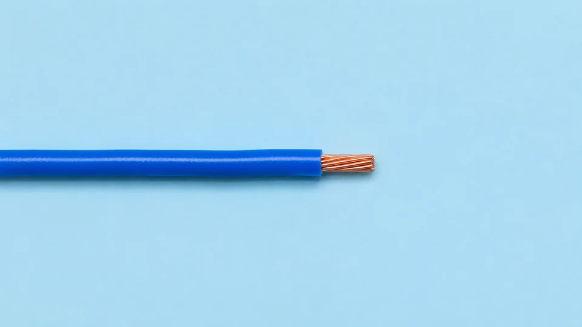

4t ESO · UD2 · PROJECTE DE TALLER🎄 Fanalet de Nadal
Recupera el fanalet de Halloween i conserva’n la carcassa. Primer, dissenya les noves parets en 2D amb Tinkercad. Després, programa la il·luminació i el so de la micro:bit amb MakeCode.
← Tornar a la unitat1. Recupera el fanalet i dissenya les parets en 2D
Recupera el fanalet que vas fer per Halloween. Conserva’n la carcassa i mesura les parets originals i els encaixos. Dissenya les noves parets nadalenques en 2D amb Tinkercad, des de la vista superior i a mida real. Prepara els fitxers SVG i presenta’ls per revisar-los abans del tall làser.
Instruccions pas a pas
- Mesura la paret original. Anota l'amplada, l'alçada i els encaixos de la carcassa que reutilitzarem.
- Busca una imatge nadalenca. Entra a Pixabay, selecciona Vectorials i tria una figura senzilla: arbre, estrella, campana o floc de neu.
- Descarrega el fitxer SVG. No utilitzis una captura JPG o PNG com a fitxer de tall.
- Obre Tinkercad. Crea el disseny, importa l'SVG i treballa sobre el pla en 2D (vista superior). Adapta les dimensions de la figura a les de la paret.
- Prepara el contorn. Comprova que les unions siguin resistents, que no quedin peces soltes i que els encaixos originals es conservin.
- Exporta i revisa. Exporta l'SVG del disseny definitiu i comprova l'escala abans del tall. No utilitzis la talladora sense autorització.
Què has de presentar a Classroom · Lliurament 1
- El disseny de les parets en 2D a Tinkercad.
- El fitxer SVG original descarregat de Pixabay.
- El fitxer SVG final de les parets, preparat per al tall.
- Una captura del disseny final.
Obrir Tinkercad · Obrir Classroom
2. Programa la micro:bit amb MakeCode
Quan tinguis el disseny de les parets, crea el programa a MakeCode. La micro:bit controlarà els LEDs i la melodia nadalenca del fanalet. Prova el programa al simulador i, després, comprova’l al fanalet.
🔴 🟢 🟡 🔵 ⚪3 colors diferents com a mínim
El circuit ha de tenir branques en paral·lel, amb un màxim de tres LEDs en sèrie per branca quan l'alimentació ho permeti. Cada alumne ha de saber explicar el programa complet.
2.1. Coneix la micro:bit i la micro:shield
 Micro:shield · guia visual dels ports. Nota: el selector 3V/5V correspon al grup de pins blaus; no connectis motors directament als pins de senyal.
Micro:shield · guia visual dels ports. Nota: el selector 3V/5V correspon al grup de pins blaus; no connectis motors directament als pins de senyal.micro:bit: és el cervell que executa el programa. micro:shield: és la placa d'expansió que facilita la connexió dels components. Amb l'alimentació desconnectada, insereix la micro:bit al connector de la shield en l'orientació indicada per la professora, sense forçar-la.
| Ports | Ús |
|---|
| P0, P1, P2 | LEDs: recomanats per començar. |
| P3, P4, P6, P7, P8 | Altres sortides; alguns comparteixen funcions amb la pantalla LED de la micro:bit. No hi ha P5 en aquest grup. |
| S0–S7 | Servomotors; no són necessaris per al fanalet. |
| M1–M4 | Motors DC; no són necessaris. |
2.2. Preparem els cables i connectem un LED
Pela només les puntes que connectaràs

Blau: aïllament. Color coure: punta pelada. El coure ha de fer contacte dins del connector.
- Desconnecta l’alimentació. Desconnecta l’USB, les piles i qualsevol font externa abans de manipular el muntatge.
- Pela els extrems que faràs servir. Amb el pelacables, retira només el tros d’aïllament que entrarà al connector. Si connectes tots dos extrems del cable, pela tots dos extrems. La resta queda coberta.
- Fixa i aïlla les unions. Un cop connectat, el coure ha de quedar dins del connector o cobert amb un aïllant. Comprova que no sobresurt cap filament i que les unions veïnes no es toquen.
Identifica les dues potes del LED
En un LED nou, la pota llarga és l’ànode (+) i la curta és el càtode (−). Al circuit de prova d’un sol LED, el senyal P0 arriba a l’ànode a través de la resistència i el càtode torna a GND amb el cable negre.
Per a un LED convencional, connecta el pin de senyal P0 a una resistència de 330 Ω i després a l'ànode (+) del LED; connecta el càtode (−) a G. No connectis el LED directament a 3V si el vols controlar amb el programa. Si utilitzes un mòdul LED de tres pins, comprova les etiquetes S, V i G i la tensió amb la professora.
Comença amb un LED i comprova que funciona abans d'afegir-ne més. No canviïs cables amb l'alimentació connectada.
2.3. Circuit de 12 LEDs: sèrie i paral·lel
Proposta de disseny: quatre branques en paral·lel, cadascuna amb tres LEDs en sèrie i una resistència pròpia. Total: 4 × 3 = 12 LEDs. Colors de LED disponibles: vermell, verd, groc, blau i blanc. Dins de cada branca, posa LEDs del mateix color i orienta’ls tots en el mateix sentit. Connecta la pota curta d’un LED amb la pota llarga del següent.
Com es relacionen els grups amb la micro:bit?
En aquest exemple de dues branques, P0 dona l’ordre al grup 1 i P1 al grup 2. La micro:bit envia els senyals al controlador. La font externa alimenta els LEDs, amb el negatiu unit a GND. Cada branca porta una resistència pròpia.
Per al fanalet de 12 LEDs: l’esquema següent mostra les quatre branques de càrrega. La professora validarà els pins i el controlador que farem servir.
Atenció: aquest és un esquema de càrrega, no una connexió directa a la micro:shield. Els pins P0–P8 són de senyal de 3 V i no poden alimentar tres LEDs en sèrie. Cal una font externa de baixa tensió adequada, resistències calculades segons els LEDs i un controlador de commutació compatible amb 3 V (amb terra comuna). La professora validarà el muntatge abans de connectar-lo. Si només disposem de 3 V, caldrà redissenyar el circuit amb un LED per branca i resistència individual, amb controlador adequat al corrent total.
Per controlar les quatre branques per separat es necessiten quatre canals de control. Els pins i els components definitius es fixaran després de verificar el material del taller.
2.4. Programació amb IA
Obre MakeCode i crea un projecte. Utilitza la IA autoritzada pel centre per generar codi JavaScript de MakeCode, no JavaScript genèric.
Obligatori: cada línia executable ha de tenir un comentari en català que expliqui què fa. No s'accepta un programa que no puguis explicar línia per línia.
Elabora el teu propi prompt
Redacta'l amb les teves paraules. No hi ha cap prompt model per copiar.
🎯 ObjectiuQuè ha de fer el fanalet?
🔌 MaterialQuins components i pins validats utilitzaràs?
💡 LlumsQuina seqüència, colors i durada vols?
♫ SoQuina melodia i quan ha de sonar?
💻 CodiQuin entorn i llenguatge necessites?
✅ RevisióCom demanaràs comentaris en català i verificaràs el resultat?
Com treballarem amb la IA?
- Decideix quina seqüència de llums i melodia vols fer.
- Anota els pins de control validats per la professora i el material real.
- Redacta el teu propi prompt i demana el codi a la IA. Conserva el prompt que has escrit.
- Llegeix cada comentari: identifica el pin, l’acció i el temps. Si no entens una línia, demana una explicació més senzilla.
- Enganxa el codi a JavaScript de MakeCode i prova’l. Comprova també la melodia; si utilitzes P0 per a àudio, no l’utilitzis simultàniament per a llums.
- Modifica un temps o una seqüència i explica què canvia.
Exemple mínim: un LED intermitent
basic.forever(function () { // Repeteix les instruccions contínuament.
pins.digitalWritePin(DigitalPin.P0, 1) // Encén el LED del pin P0.
basic.pause(500) // Espera mig segon.
pins.digitalWritePin(DigitalPin.P0, 0) // Apaga el LED del pin P0.
basic.pause(500) // Espera mig segon.
}) // Final del bloc de repetició.1 = encès; 0 = apagat (en el circuit de LED convencional mostrat). 500 ms = mig segon. Adapta l'exemple al teu disseny, no el copiïs sense entendre'l.
Obrir Gemini (si està habilitat) · Obrir MakeCode